Как кофейня Solo увеличила выручку в 2,5 раза за четыре месяца
Инструменты
План/факт, кассовые выгрузки, Google Таблицы, Яндекс Карты, VK Ads, Senler, EVEBOT, Яндекс Еда
Результат в цифрах
- Выручка в октябре
- 1 644 645,75 ₽
- В июне — 663 974,70 ₽
- Рост к июньскому минимуму
- ×2,48
- За четыре месяца
- Средний чек в октябре
- 571,65 ₽
- +43% к маю и июню
- Чеки в октябре
- 2 877
- +82% к апрелю
Точка А: сезонный трафик не давал роста чека
Весной 2026 года Solo на Мира, 13 работала на локальном трафике. В апреле выручка составила 684 911,80 ₽ при среднем чеке 432,67 ₽. В мае поток вырос до 2 072 чеков, а выручка — до 826 225,92 ₽, но средний чек упал до 398,76 ₽: гости часто брали один напиток и уходили.
В июне выручка откатилась до 663 974,70 ₽, число чеков — до 1 665, а средний чек остался на уровне 398,78 ₽. При таком чеке дорогой лид не окупается, поэтому просто увеличить рекламный бюджет было нельзя.
Нужна была система: ежедневный план/факт, работа с меню и допродажами, виральные поводы для визита и механики, которые переводят холодный трафик в гостей без дорогого выкупа охватов.
Сначала — прогноз продаж и ежедневный контроль
После июньской просадки связали медиаплан с прогнозом продаж и подневным план/фактом. Для двух точек задали разные планки по дням недели: у кофейни на Мира основная выручка была в будни, у кондитерской «Торт Solo» на Циолковского — в выходные.
- Мира, 13: план 33 500 ₽ в будни и 25 000 ₽ в выходные.
- Циолковского, 29: план 26 000 ₽ в будни и 30 000 ₽ в выходные.
- Базовый план сети на август: 1 814 500 ₽, целевой ориентир — 2 000 000 ₽ при маркетинговом бюджете 72 000 ₽.
| Точка | План на август | Факт | Выполнение |
|---|---|---|---|
| Мира, 13 | 968 500 ₽ | 1 094 560 ₽ | +13% |
| Циолковского, 29 | 846 000 ₽ | 966 637 ₽ | +14% |
| Две точки | 1 814 500 ₽ | 2 061 197 ₽ | +14% |
В августе вместо запланированных 72 000 ₽ на маркетинг потратили 49 066 ₽. Чистый рекламный расход без комиссий агрегаторов составил 27 800 ₽ — 1,34% от выручки.
1. Геймификация: «Почеши пузико котику»
Вместо стандартной скучной формы со скидкой собрали интерактив на сайте: пользователь чесал пузико нарисованному котику, а после завершения анимации ему открывался промокод на бесплатный айс-латте.
Главная конверсионная цель в Яндекс Метрике была настроена не просто на факт игры, а на клик по кнопке «Скопировать промокод» (ID 591964486). Это отсекало случайные касания и фиксировало тех, кто осознанно забрал оффер. В дни активных посевов конверсия достигала 24%, а сохранённый промокод приводил гостя в кофейню, где бариста совершали допродажи десертов и выпечки.
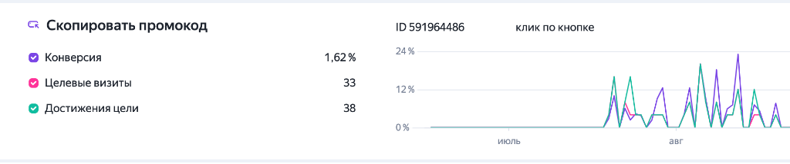
2. Виральные акции вместо покупки охватов
- «Кофе за листики», 26 июля: гость приносил красивый лист с дерева и менял его на напиток. Кофейня получила полную посадку с утра и пользовательский контент в соцсетях.
- «Кофе за слухи», 16 августа: бесплатный кофе за свежий слух или сплетню, рассказанную бариста. Анонс собрал более 7 200 лайков и 18 500 репостов, а трафик в день акции вырос на 25% к обычному дню.
Экономия: на печать листовок для «Кофе за слухи» планировали 5 000 ₽, но потратили 0 ₽ — анонс распространился через соцсети.
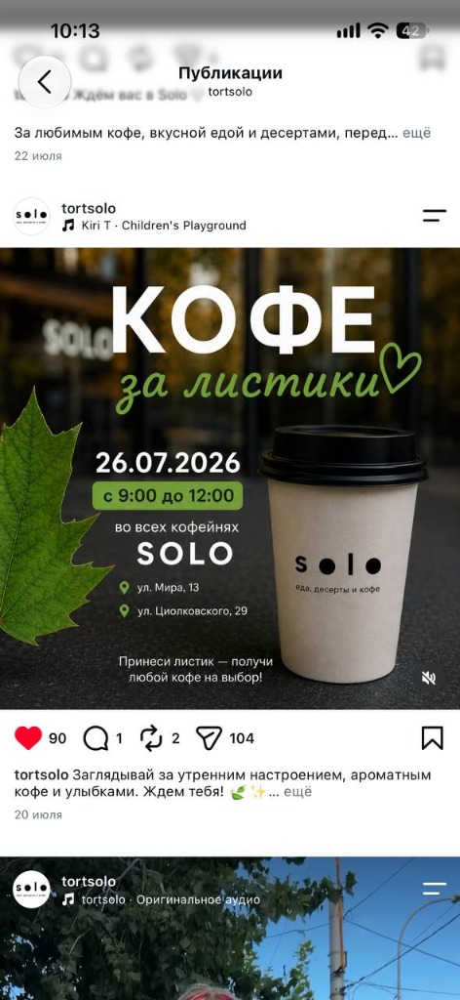
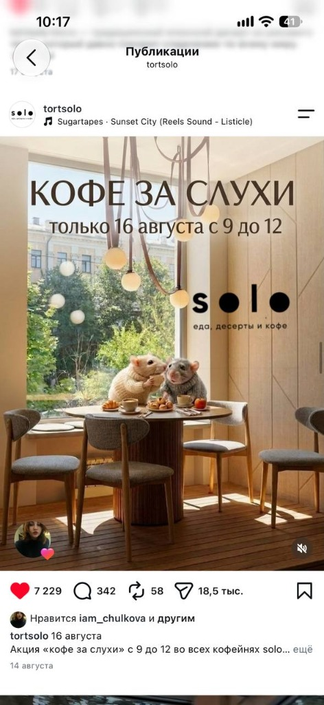
3. EVEBOT: продукт, который гости снимали сами
На кофе-принтере EVEBOT печатали изображения, мемы с котами и фотографии питомцев гостей прямо на молочной пенке. Чашка кофе стала ключевым драйвером пользовательского контента: гости фотографировали процесс, отмечали кофейню и приводили друзей.
Конкурс «Твоя киска на кофе»: 200 комментариев с питомцами
Чтобы запустить волну вовлечения, бариста выложили Reels с анонсом конкурса: предложили гостям скидывать в комментарии фотографии своих котов и собак, пообещав напечатать их портреты на напитках. Видео вызвало эмоциональный отклик — подписчики прислали 200 комментариев с фото своих любимцев, активно делясь роликом с друзьями.
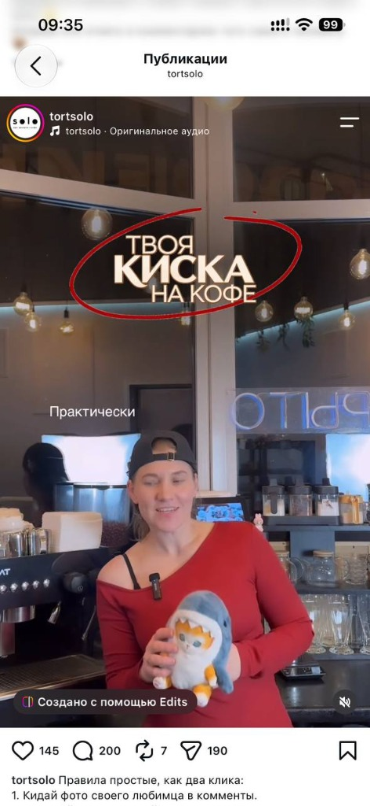
Лавина пользовательского контента (UGC)
Гости приходили в кофейню лично увидеть, как их котик появляется на пенке латте. Это породило стабильный поток отметок в Stories и Reels: гости восхищались эстетикой, отмечали @tortsolo и привлекали в кофейню свою аудиторию. Органический охват рос без копейки затрат на рекламу.
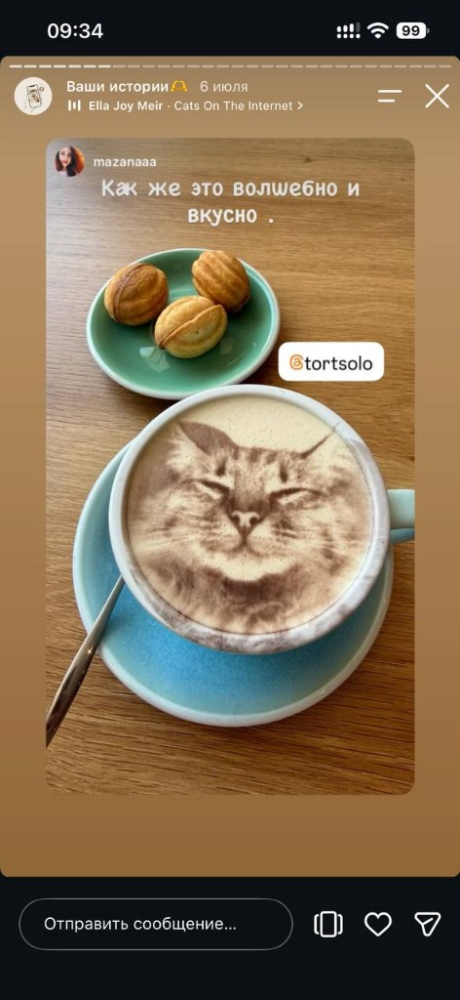
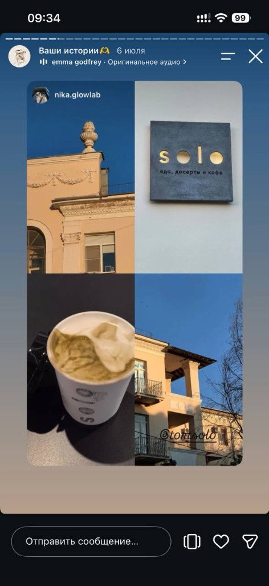
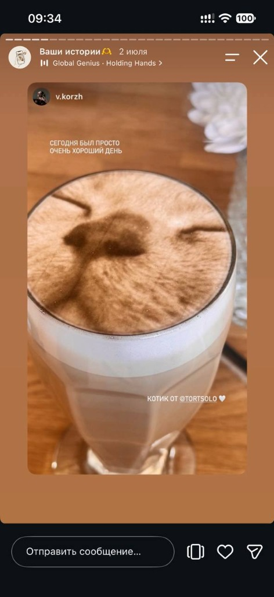
4. Меню и допродажи: рос не только поток, но и чек
Пересобрали продуктовую матрицу и обучили команду нативным допродажам: свежей выпечки, сытных позиций и фирменных десертов из кондитерской «Торт Solo». Чтобы знакомить гостей с новыми позициями и раскачивать интерес, организовывали специальные дегустации.
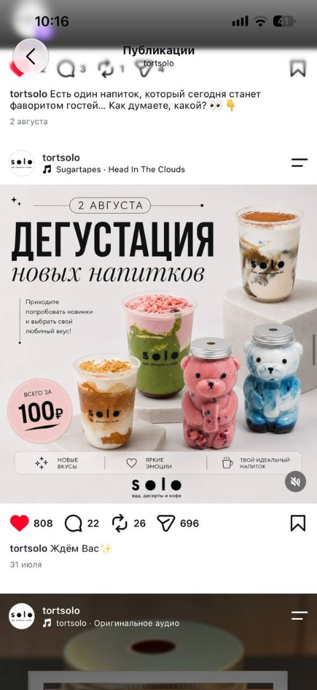
На Мира, 13 средний чек вырос с 398,76 ₽ в мае до 488,04 ₽ в августе, 564,99 ₽ в сентябре и 571,65 ₽ в октябре (+43% к маю). То есть выручка росла за счёт двух множителей одновременно: числа чеков и суммы покупки.
5. Запуск Яндекс Еды: медийный охват, динамическая наценка и переманивание гостей
Выход в агрегаторы доставки часто пугает кофейни высокой комиссией сервиса (до 30–35%). Однако мы подошли к Яндекс Еде не как к статье расходов, а как к самостоятельному управляемому каналу с тремя ключевыми задачами:
Почему решили выйти в Яндекс Еду?
- Бесплатная медийная реклама: присутствие на главной витрине Яндекс Еды работает как непрерывная наружная реклама в смартфонах жителей города. Даже если пользователь в моменте ничего не заказал, бренд Solo постоянно на виду, повышая знание и запоминаемость кофейни.
- Ценообразование через динамическую надбавку: перед запуском провели глубокий аудит конкурентов по Волгограду (Персонажи, Шпинат, Патрики, Лис Борис, Colba Coffee, Angel Cakes, Гретель, Миндаль и др.). В детальной таблице свели граммовки, цены и стоимость за 1 грамм по всем категориям меню (завтраки, сырники, тосты, круассаны, эклеры). На основе этого сформировали динамическую надбавку к ресторанным ценам: блюда оставались привлекательными по рынку, но полностью перекрывали комиссию сервиса.
- Переманивание клиентов в кофейню: Яндекс Еду использовали как воронку первичного касания. В каждый заказ курьера вкладывали брендированную листовку с оффером на первый заказ непосредственно в кофейне Solo. Клиент знакомился с качеством дома или в офисе, а за повторными покупками приходил в кофейню в офлайн — уже с нулевой комиссией.
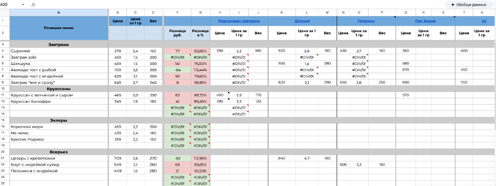
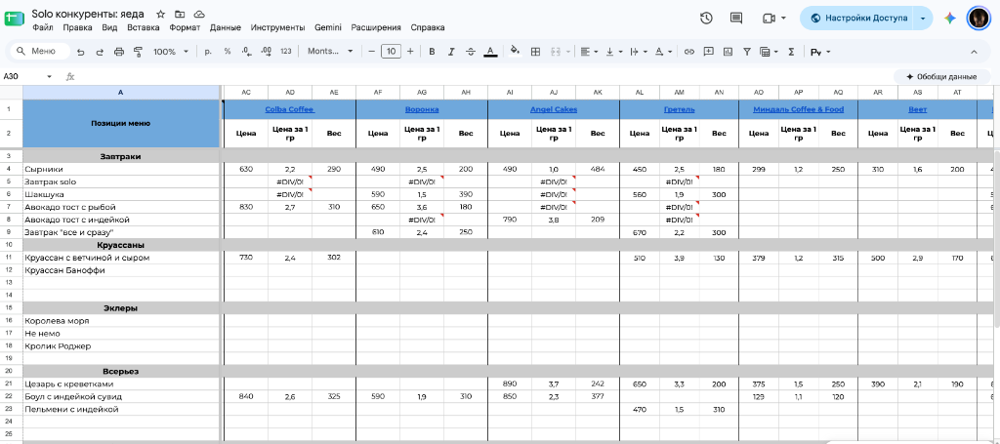
Результаты в Яндекс Еде
Канал быстро показал впечатляющую юнит-экономику с чеком, в два с лишним раза превосходящим офлайн-кассу:
- Средний чек 1 158 ₽: гости на доставке заказывали комплексные наборы (завтрак + напиток + выпечка), что дало чек более чем вдвое выше кассового (571 ₽).
- 126 выполненных заказов: стабильный поток без платного продвижения внутри агрегатора.
- 99% доступность на сервисе и всего 2% отмен: слаженная операционная работа кухни и курьеров.
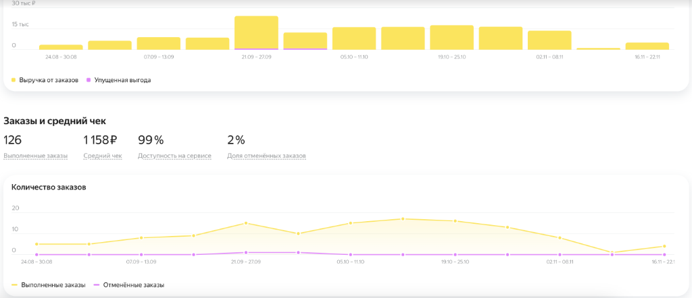
6. Performance и геомаркетинг на микробюджете
- Яндекс Карты: подключили приоритетное размещение, упаковали карточку и гео-сторис, вели трафик на лендинг с котиком. При оплате 30 000 ₽ на 90 дней получили специальные условия с бонусом в 15 000 ₽.
- VK Ads и Senler: работали с локальной аудиторией и базой. В августе на таргет ушло 12 500 ₽, за весь период — около 40 000 ₽.
- Контроль юнит-экономики: неэффективные механики отсекали до запуска, а не после того, как они съедали маржу.
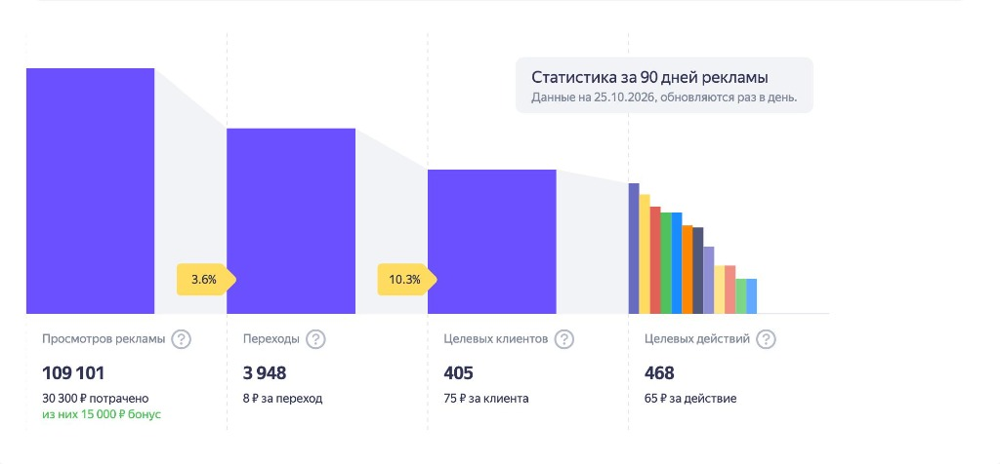
Динамика по месяцам: Мира, 13
| Месяц 2026 | Выручка | Средний чек | Чеки | Ключевой драйвер |
|---|---|---|---|---|
| Апрель | 684 911,80 ₽ | 432,67 ₽ | 1 583 | Базовая точка |
| Май | 826 225,92 ₽ | 398,76 ₽ | 2 072 | Сезонный поток, просадка чека |
| Июнь | 663 974,70 ₽ | 398,78 ₽ | 1 665 | Запуск план/факта |
| Июль | 915 242,40 ₽ | 460,15 ₽ | 1 989 | Меню, EVEBOT, «Кофе за листики» |
| Август | 1 094 671,56 ₽ | 488,04 ₽ | 2 243 | Котик, Яндекс Карты, «Кофе за слухи» |
| Сентябрь | 1 557 115,51 ₽ | 564,99 ₽ | 2 756 | Осенние офферы и Senler |
| Октябрь | 1 644 645,75 ₽ | 571,65 ₽ | 2 877 | Масштабирование рабочих связок |
К октябрю выручка выросла в 2,48 раза к июньскому минимуму и в 2,4 раза к апрелю. Прирост к апрелю — почти 960 000 ₽ ежемесячной выручки.
Что не сработало и что пришлось переделать
- Бумажные листовки не понадобились. На две полиграфические гипотезы закладывали 10 000 ₽, но виральный посев в соцсетях сработал без печати.
- Промокод на десерт без порога чека отменили. На запуск в ВК планировали 10 000 ₽, но пересчёт показал риск для маржи. Вместо этого трафик пошёл на игру с котиком и айс-латте.
- Ручной план/факт не выдержал нагрузки. После 3 сентября перестали вручную заполнять старую вкладку и переключились на кассовые выгрузки и сводные дашборды.
- CSV-отчёты пришлось чистить. В них не было точного числа уникальных чеков и гостей, а возвраты учитывались иначе. Данные собирали из нескольких отчётов и удаляли дубли.
Итог
Solo выросла не за счёт одной удачной рекламной кампании. Виральные акции создавали повод прийти, игра с котиком собирала контакты, EVEBOT давал пользовательский контент, а меню и работа бариста превращали трафик в более крупный чек.
План/факт связывал эти действия с выручкой и помогал вовремя отключать слабые гипотезы. Поэтому рост до 1,64 млн ₽ произошёл без пропорционального увеличения рекламных расходов.
Главный вывод
Для локального бизнеса с небольшим чеком рост начинается не с увеличения бюджета. Сначала нужны управляемая юнит-экономика, повод для визита и продуктовая механика, которая увеличивает чек. Реклама уже усиливает эту связку.
В оперативной августовской сводке выручка на Мира, 13 составила 1 094 560 ₽, в финальной кассовой выгрузке — 1 094 671,56 ₽. Разница связана с обработкой возвратов и дублей; в месячной динамике использованы финальные кассовые данные.